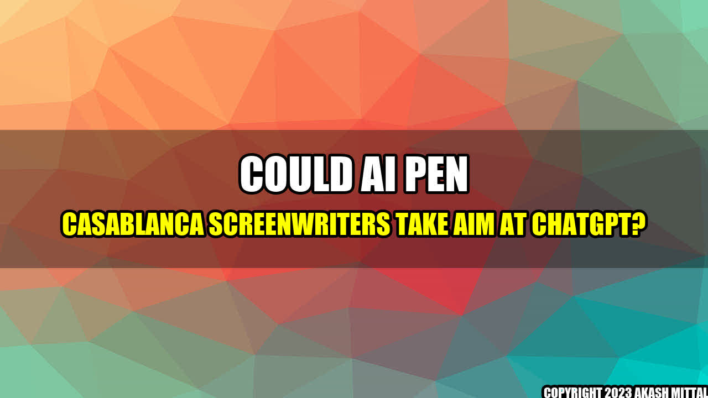

Could AI Pen Casablanca Screenwriters Take Aim at ChatGPT?
What would happen if the legendary Hollywood movie Casablanca was written not by the talented screenwriters, but by an artificially intelligent algorithm like ChatGPT? Would it still be a timeless classic? Could AI screenwriting be the future of Hollywood?
Today, we have the technology to train deep learning models to generate scripts, synopses, dialogues, and even characters. These models can learn from vast amounts of text data and generate plausible outputs that resemble human writing styles. However, they still lack the creativity, intuition, and imagination of human writers, who can draw from personal experiences, emotions, and cultural influences.
Real Life Examples
Despite these limitations, there are already some examples of AI-generated screenplays that have made it to the big screen, with mixed reviews. For example, the science-fiction movie Sunspring was written entirely by an LSTM neural network, and the result was a surreal and nonsensical plot that baffled most viewers. Similarly, the short film It's No Game was partly written by an AI program, which produced some eerie and uncanny dialogues, but the overall story was still crafted by human writers.
Other companies, like ScriptBook, have developed AI tools that can analyze movie scripts and predict their box office performance with a high accuracy rate. By analyzing the script's structure, characters, themes, genre, and other factors, these tools can estimate how much money the movie is likely to make in theaters and on streaming platforms.
Main Companies
One of the main companies in the AI screenwriting industry is called NALIDA (Next-Gen Authoring and Storytelling using Artificial Intelligence). Their flagship product is called ScribeAI, which claims to be able to generate "compelling and emotionally engaging stories with a touch of a button." The company has partnered with Hollywood studios and networks to test their platform on real movie projects, but the results have not been made public yet.
Another company that has been making waves in the AI screenwriting scene is called Largo.AI. Their AI model can generate complete movie scripts from scratch, based on a few inputs from the user, such as the genre, tone, and plot summary. They have also created a novel AI engine called "Liquid Decisions" that can dynamically adjust the plot and character arcs of a movie based on the audience's reactions.
Conclusion
While AI screenwriting is still in its infancy, it has the potential to disrupt the Hollywood landscape and create new forms of storytelling. However, it is unlikely that AI will replace human writers entirely, as it still lacks the empathy, humor, and cultural relevance of human creativity. Rather, AI could complement human writers by providing them with new tools, insights, and inspirations to enhance their craft and reach wider audiences.
Akash Mittal Tech Article
Share on Twitter Share on LinkedIn